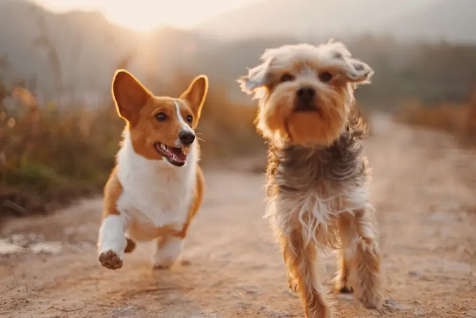

Serviços e produtos
Filtre por categoria para encontrar banho, tosa, orientação e itens de prateleira. Os valores são referência e podem variar conforme o porte do animal.
Rotina e bem-estar
Além do atendimento na loja, orientamos tutores sobre passeios, hidratação e brincadeiras que reforçam o vínculo com o pet.
